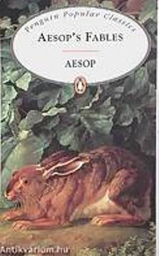

Aesopus
Aesopus |
|  | A több ezer éve élt nagy
görög
mesemondó főleg
állattörténetei által
ismert. Több száz fennmaradt
története
közül szemezgettük ki a számunkra
legkedvesebbeket, mert mondanivalójuk ma is igen
aktuális
kicsiknek, nagyoknak egyaránt. A történetekből dalok születtek. |
|||
| |
Zenék
Az alább található dalcímek egy egy dal linkjei.Bármelyikre rákattintva a címhez tarozó dalt hallgathatod meg, de le is töltheted! Jó szórakozást Előadják: Nemessányi László ének Nemessányi Adrienn ének Sáfár Mónika próza, ének |
|||
Letölthető hanganyag |
A hanganyag kiadását illetőleg a web-et választottam, mert így eljuthat bárkihez. Ingyen letölthető! Visszajelzéseket várok: nemessanyi@gmail.com |
|||
zenészek:
|
||||
Tündérrét(zenés
mesejáték)
A
rét két éteri lénye :
Kála
virágtündér
(Terescsik Eszter) és Bodza fatündér
(Nemessányi László)
békességben
élnek
mindaddig míg arra nem vetődik Eszes Marci (Szűcs
László) aki a szépséges
királylány számára keres
gyógyírt az erdőben. Marci, mint
afféle ember,
letapossa a füvet, letépi a virágokat
és
mindezek tetejébe még szemetel is.
A
két tündér Aesopus
megzenésített
meséivel
vezetik rá Marcit, hogy mi a
különbség
jó és rossz között, valamint,
hogy az
eszünk helyett néha megéri a
szívünkre
hallgatni. A végén, természetesen,
minden jóra fordul és Marci a
tündérek
segítségével jobb emberként
távozik
az
erdőből. A profi színházi előadás
maradandó
élményt nyújt kicsiknek és
nagyoknak egyaránt.
Dalszövegek: D.
Nemessányi
Éva
Zeneszerző: Nemessányi
László
Díszlet: Terescsik
Eszter,
Főző Ditta, Szabolcs Bara, Terescsik Kati
|
||||
|
|
|
|||
|---|---|---|---|---|
| i |